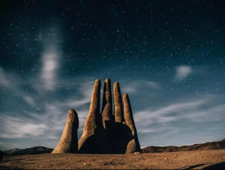

Embalse El Yeso, uno de los principales atractivos turísticos del Cajón del Maipo, en la Región Metropolitana.

Una gran mano surgiendo de la arena, quien con sus 11 metros de altura sorprende a los visitantes que pasan por la ruta 5 Norte, a 75km al sur de Antofagasta.
El paisaje en el Embalse de Ancoa, ubicado a 45km de Linares, en la Región del Maule.
El Gigante de Tarapacá situado en el cerro Unitas a 15km de Huara, en la Región de Tarapacá, es la figura antropomorfa más grande del mundo.